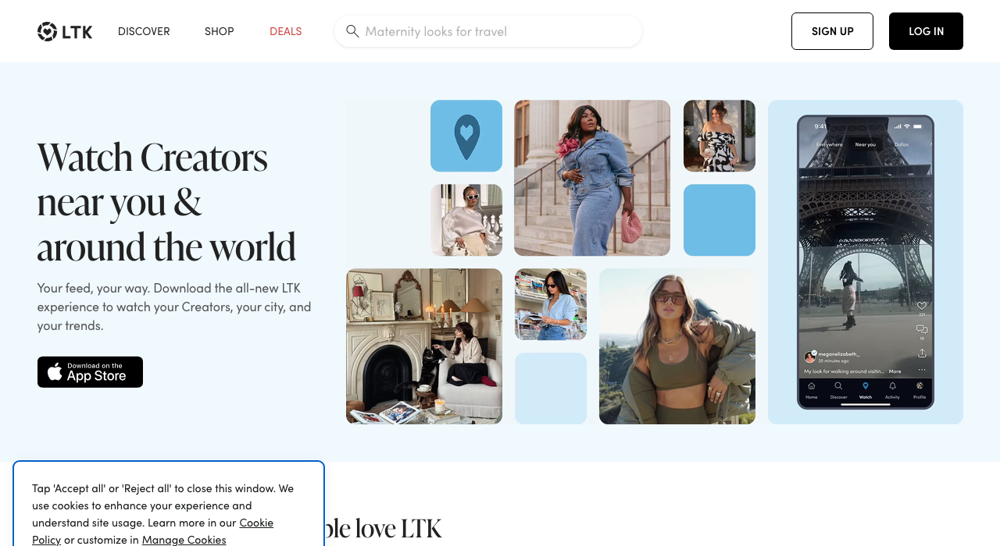
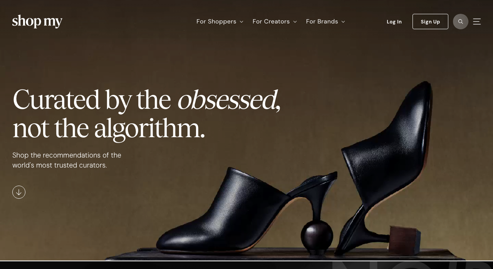

Consumer as an Active Player — Not Just a Buyer
Every consumer currently on TF was sent there by a designer — TF has no independent consumer traffic. A designer with that model has no reason to stay on TF over selling direct from their own site. A consumer discovery layer (designer feed, follow, drop alerts) gives designers reach they cannot get from their own channels.
Demand Intelligence Dashboard
Real-time analytics on which designs, colours and sizes are most tried on and saved. Enables data-driven decisions on what to produce, at what volume, and in which markets.
Virtual Try-On (VTO)
Third-party API — no proprietary build. True Fit maps body measurements to a brand's specific sizing. 3DLOOK generates a body model from two photos. MySize/Naiz Fit recommends size from a short questionnaire. For TF's pre-order model, fit confidence removes the main reason consumers hesitate to commit. Sizing technology deep dive →
Style & Size Profile
A one-time setup capturing measurements, colour palette, fabric preferences, and style archetype. Powers personalised recommendations across every designer on the platform — recommendation quality compounds with usage.
Early Access Premium Tier
Paid consumer subscription unlocks virtual try-on of unreleased prototypes, co-creation voting rights, and first-access pre-orders at a discount. Converts casual browsers into committed community members.
Data as an Additional Revenue Layer
Anonymised demand signals — top styles by region, real size distributions, colour trend velocity — packaged as premium analytics reports for fashion brands, investors, and industry analysts. Recurring B2B revenue independent of transaction volume.

| What it does | Lets creators design and sell fashion items using licensed brand IP; auto-distributes royalties when designs are sold or remixed |
| Founded | 2021 — New York, NY |
| Funding | $10M seed · Accel, Polychain, Pantera, Jump Crypto |
| Creators | 3,000+ beta users |
| GMV | Unknown |
| Revenue | Undisclosed — growth stage |
| Revenue growth | Unknown |
| Brands | Adidas, Balmain, Crocs, Champion, Ralph Lauren, Smiley, Pangaia |
| Model | Monthly subscription + commission on creator sales |
| Commissions | Basic plan 10% · Premium plan 8% — charged on creator sales in addition to subscription fee (source: Perplexity PDF §7) |
| Geography | US (NY/SF) — global brand partners |

| What it does | Affiliate commerce platform connecting fashion influencers to brands and shoppers via shoppable links; takes commission on each sale |
| Founded | 2011 — Dallas, TX |
| Funding | ~$315M total raised · $2B valuation (SoftBank led $300M round, 2021) |
| Influencers | 150,000+ |
| GMV | $3B+ annually |
| Revenue | Undisclosed |
| Revenue growth | Mature — stable |
| Brands | 5,000+ (mass market + premium) |
| Model | Affiliate commissions + brand SaaS fees + managed campaign fees |
| Commissions | Fashion 5–15% · Beauty 5–15% (brand-set rates within range — source: Perplexity PDF §9) |
| Geography | 100+ countries · EU hubs: UK, Germany |

| What it does | Influencer commerce platform — shoppable storefronts, brand campaign tools, and full attribution showing exactly which influencer drove each sale |
| Founded | 2020 — New York, NY |
| Funding | ~$147.5M total raised · $1.5B valuation (Bessemer, Bain Capital Ventures, Avenir, Menlo) |
| Influencers | 185,000+ curated tastemakers |
| GMV | $1B+ annually |
| Revenue | ~$80M (2025 est. Sacra) · profitable since 2024 |
| Revenue growth | ~200% YoY (2025, Sacra) |
| Brands | 1,200+ premium (Rhode, Net-a-Porter, Gucci) |
| Model | Affiliate commissions + brand SaaS (Lookbooks, Opportunities tools) |
| Commissions | Fashion 8–20% · Beauty 15–25% — higher than LTK across every category (source: Perplexity PDF §9) |
| Geography | US-first · UK expansion 2025 |
W&B ($95M GMV, profitable) and NOTHS (~$110M revenue) prove the independent designer market is real in Europe — but both are pure marketplaces. Designer produces, consumer buys.
| What it does | Curated marketplace for 2,000+ independent designers — fashion (83%), jewellery, beauty, homeware — no inventory held; brands self-manage listings |
| Founded | 2010 — London, UK (founders: George & Henry Graham) |
| Funding | ~£4.5M Series A (2019, Guinness Asset Management); ~$20M total per media; B Corp certified |
| Creators | 2,000+ independent designer brands; ~300 applications per month |
| GMV | ~$95M (2024) |
| Revenue | ~$50M (2024) — second consecutive profitable year |
| Revenue growth | US grew from $3M (2019) to $45M+ (2024); US now ~50% of total sales |
| Brands | N/A — designers are the product (no separate brand client tier) |
| Model | Monthly designer subscription + undisclosed % commission per sale; stores in London, NYC, LA |
| Commissions | Not publicly disclosed — set individually per brand in seller dashboard. Subscription: $375/month per brand (source: Modern Retail, W&B seller terms) |
| Geography | London HQ · NYC (SoHo, since 2017) · LA (West Hollywood, since 2022) — US ~50% of sales |
| What it does | Curated UK marketplace for independent small businesses — every product must be designed or hand-finished by the seller; covers fashion, gifts, home, food. Zero inventory held by the platform. |
| Founded | 2006 — London, UK; founders Holly Tucker and Sophie Cornish |
| Funding | ~$77.7M total raised (source: Crunchbase) |
| Creators | 5,000+ independent seller businesses; 350,000+ products; 4M+ customers |
| GMV | Not separately disclosed |
| Revenue | ~$110M (2024, secondary source — Mintsoft; not confirmed from primary filing) |
| Revenue growth | Not publicly disclosed |
| Brands | N/A — sellers are the independent makers; no separate brand client tier |
| Model | Annual joining fee + commission per sale; asset-light, no platform inventory |
| Commissions | 25% per sale + £199/year joining fee (source: NOTHS seller terms via Mintsoft) |
| Geography | UK-primarily · Growing online presence; no significant US expansion confirmed |
| What it does | Influencer discovery and analytics platform — find influencers by audience demographics, engagement rate, or visual aesthetic; manage outreach and track campaign performance |
| Visual aesthetic search | Yes — upload any reference image to find influencers whose content matches that visual style; also accepts natural-language descriptions (e.g. "minimalist beige outfits outdoors"). Available on all plans. (source: modash.io/features/influencer-discovery) |
| Pricing | $199/mo (Essentials) · $499/mo (Performance) · Enterprise ~$14,700/yr (source: modash.io/pricing) |
| Influencers indexed | Not publicly disclosed |
| Key fashion clients | Not specifically named — general platform with documented fashion brand usage |
| Model | SaaS subscription — discovery, audience analytics, outreach, campaign tracking |
| Cost to TF | $199/mo Essentials · 14-day free trial, no credit card required (source: modash.io/pricing) |
| Geography | Estonia HQ · Global influencer database |
| What it does | Influencer content capture and discovery — automatically captures 100% of Instagram and 98% of TikTok posts from tracked influencers; AI Super Search finds new influencers by uploaded image or natural language |
| Visual aesthetic search | Yes — "AI-powered Super Search": upload a lookbook image or describe a look in plain language to surface influencers posting visually matching content. Searches across all captured post content. (source: archive.com) |
| Pricing | Free tier available · Startup (20,000 credits/mo) · Growth (70,000 credits/mo) · Enterprise (150,000 credits/mo) — paid tier pricing on request (source: archive.com/pricing) |
| Influencers indexed | Not publicly disclosed |
| Key fashion clients | Allbirds, Uniqlo, POPFLEX, Kitsch, Parade (source: archive.com) |
| Model | SaaS subscription with credit-based tiers; passive UGC capture runs continuously across tracked influencer accounts |
| Cost to TF | Free tier to start — zero cost while TF's ambassador roster is small; upgrade as it scales (source: archive.com/pricing) |
| Geography | US · Global influencer database |
| What it does | Influencer marketing platform with documented visual AI brand-fit matching — analyzes actual image and video content, not just hashtags or bios, to surface influencers whose posts already match a brand's visual aesthetic and values |
| Visual aesthetic search | Yes — "True AI brand-fit matching: Goes beyond keywords to understand visual aesthetics and brand values." Analyzes post content directly. Positioned as the leading alternative to GRIN specifically for visual-first discovery. (source: storyclash.com, influencermarketinghub.com) |
| Pricing | €499/mo (Starter) · €999/mo (Growth) · €1,899/mo (Scale) · Enterprise custom · Demo required (source: storyclash.com/pricing) |
| Influencers indexed | Not publicly disclosed |
| Key fashion clients | Not specifically named — general fashion/lifestyle platform |
| Model | SaaS subscription — influencer discovery, campaign management, visual content analysis |
| Cost to TF | €499/mo Starter — 2.5× the Modash entry price; demo required before access (source: storyclash.com/pricing) |
| Geography | European HQ · Global influencer database |
Why the name works
Distinctive and memorable — two clean words, easy to say in English, Italian, and French. "Terra" signals earthy, artisanal, grounded — the right connotation for independent designers who make things by hand, not mass-market factories. "Ferra" adds sharpness and sounds like a fashion house. The combination is European in feel without being geographically specific.
Trademark
Is "Terra Ferra" registered as a trademark in IC 025 (clothing) in the US and EU?